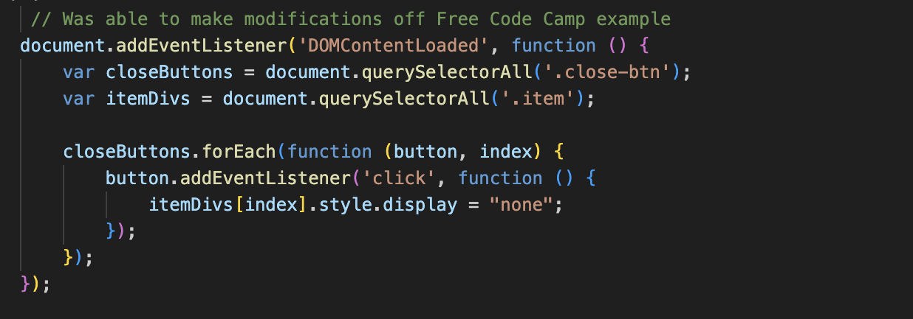
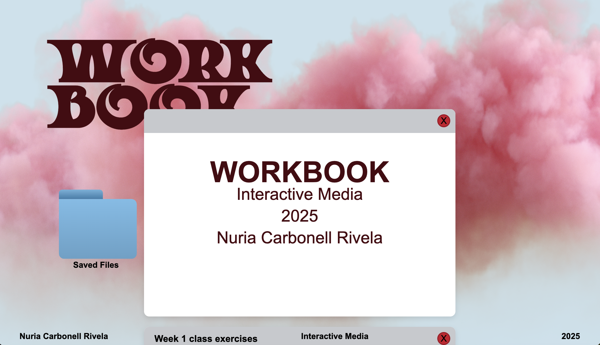
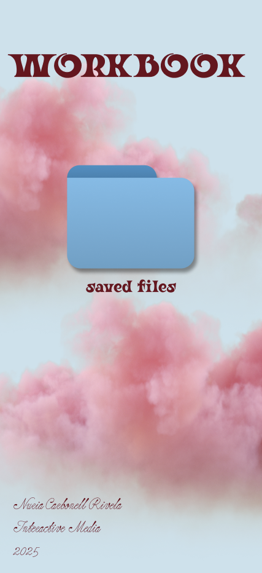
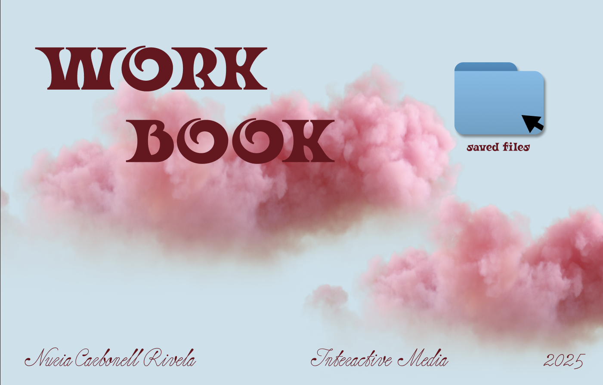
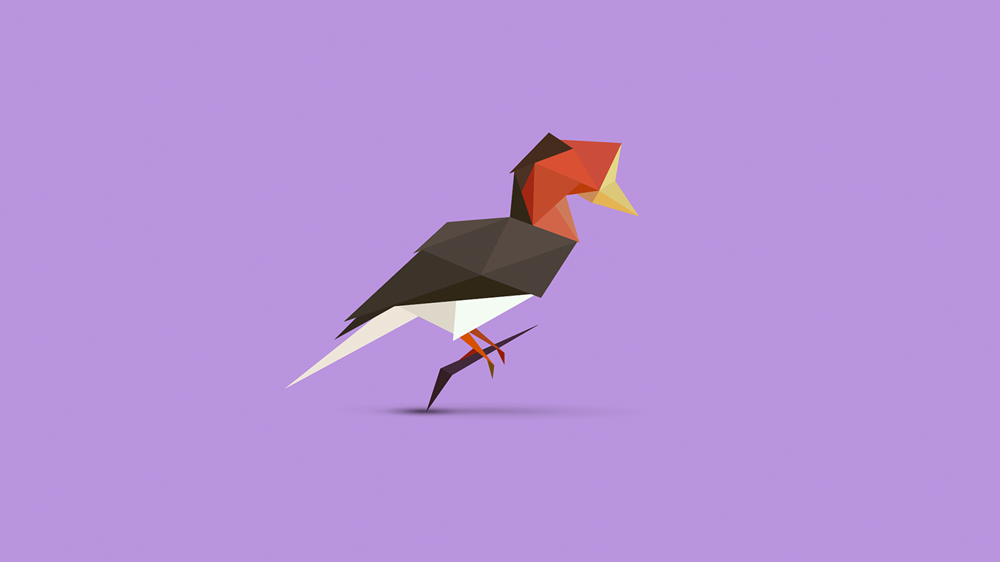
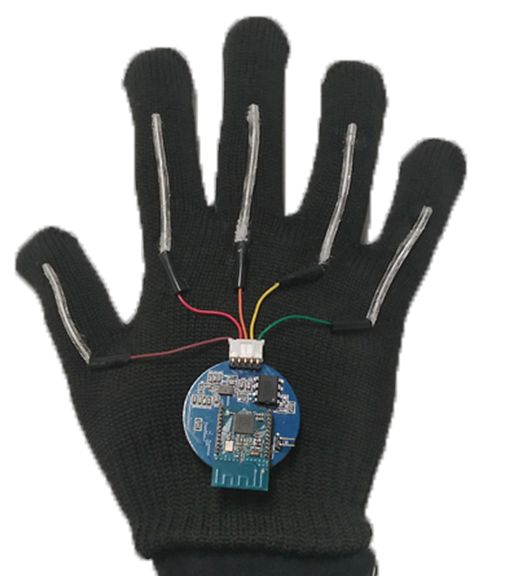
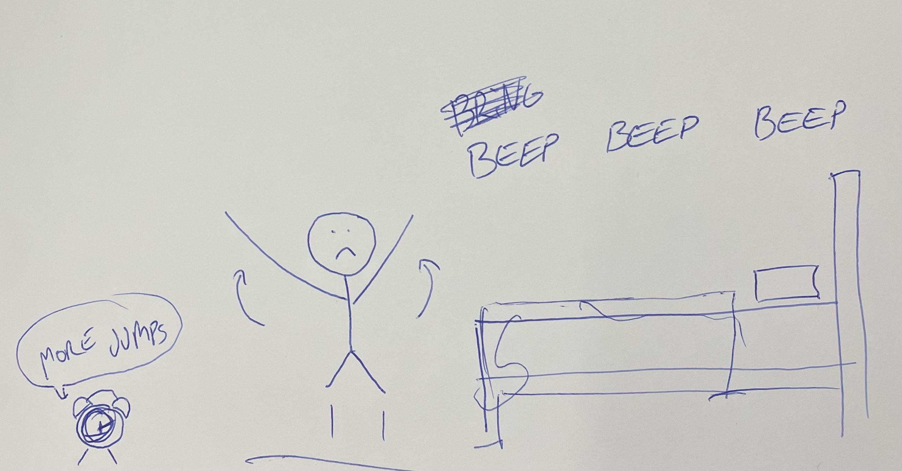
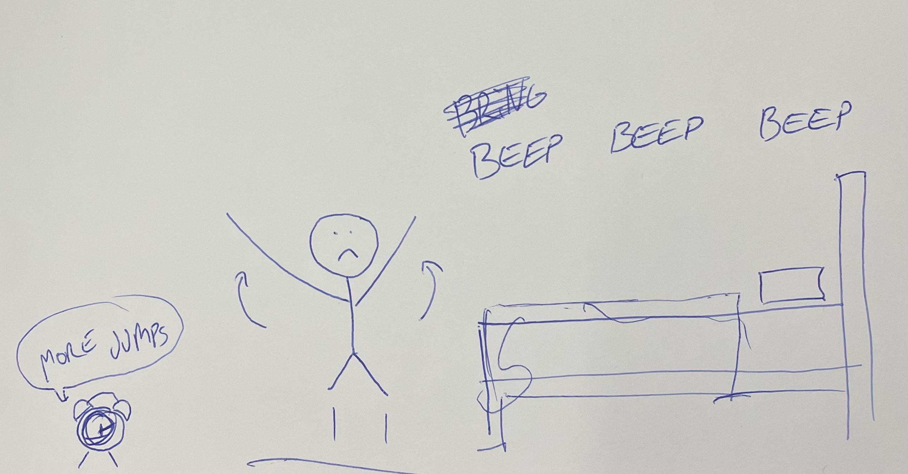

Code Snipet
X
Developing the cloud animation though keyframes.

Developing the cloud animation though keyframes.
Making the 'div' close (hide) when pressing on the X with JS.
At this stage I have most of my work in thier own div compartments that close when clicked on the X, they are organised vertically down.
At this stage i had manage to set the animation for the background and added an outside font. I had also created a button with my custom SVG file. There is an error in the left side of the screen where there is a blue rectangle, I managed to fix by setting boundaries for my button element.

Figma Prototype Mobile Version.
Figma Prototype 3

Figma Prototype 2

Figma Prototype 1
I unfortunately did not take a photo of the crazy eights exercises, however below is a video of my paper prototype.
Captain Goosebumps is a game i found quite fascinating as it changes colour depending on the goose's path, I found the design of the game really aesthetic and engaging.
Captain Goosebumps game link
Species in pieces is an interactive exhibition by Brian James, each poligon is modified by its coordinates using purely CSS transitions.
Species in pieces exhibition link Avatar 1 & 2
In the Avatar movies there are computer interactions though imersing yourself in a foreign body which is lab made and the interaction that the native avatars have with the outside computer technologies.
Wearable-tech glove translates sign language into speech in real time.
Wearable-tech glove article TAG! (HTML tag relay) and Gestures & Interfaces
 

WORKBOOK
Interactive Media
2025
Nuria Carbonell Rivela